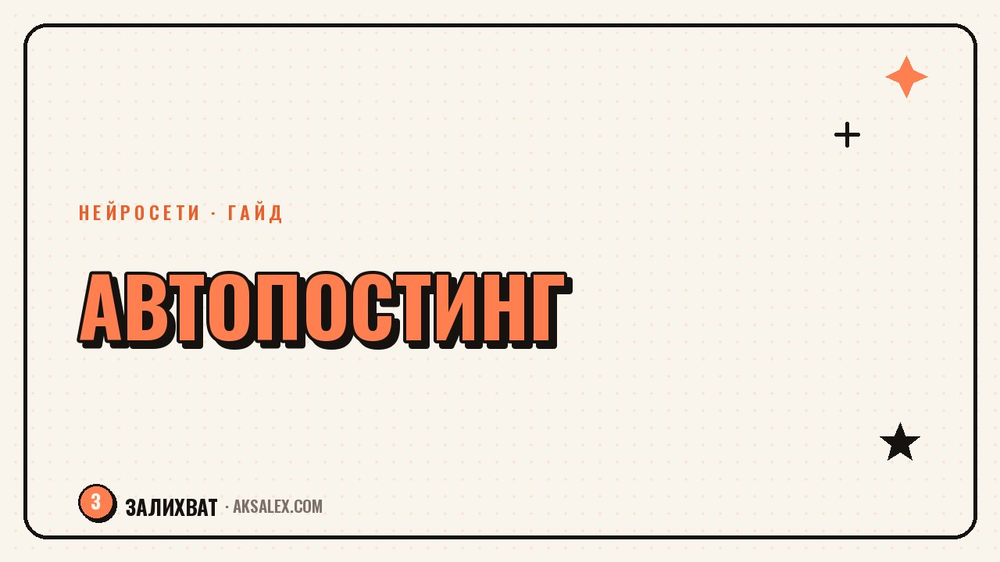

Как автоматизировать постинг в соцсетях

Автоматизация постинга - это не про робота, который ведёт блог за тебя, а про то, чтобы снять с себя рутину: не сидеть с телефоном в нужную минуту, не забывать выкладывать, не держать всё в голове. Ты один раз готовишь контент пачкой и настраиваешь его выход по расписанию. Разберём, что реально можно отдать на автомат, какими инструментами и где автоматизация вредит.
Что на самом деле съедает время
Кажется, что время уходит на съёмку, но чаще всего его крадёт разрозненность. Ты вспоминаешь о посте в последний момент, судорожно придумываешь текст, ищешь картинку, публикуешь на бегу и забываешь про вторую площадку. Каждое такое переключение стоит сил и внимания.
Автоматизация закрывает именно эту дыру. Ты отделяешь создание контента от его публикации: сначала готовишь, потом планируешь выход. Голове больше не нужно помнить, что и когда выложить, - за это отвечает расписание.
Автоматизируй не творчество, а рутину вокруг него: расписание, напоминания, повторяющиеся действия.
Три уровня автоматизации
Не нужно сразу строить сложную систему. Двигайся по уровням: от простого к сложному, включая следующий, только когда освоила предыдущий.
Уровень 1: отложенные публикации
Многие соцсети умеют публиковать пост в заданное время сами. Ты готовишь несколько постов за раз и ставишь им время выхода. Это база, которая уже снимает половину рутины и ничего не стоит.
Уровень 2: планировщик на несколько площадок
Сторонний сервис-планировщик позволяет из одного окна разложить контент сразу по нескольким соцсетям на неделю вперёд. Ты видишь всю сетку публикаций и не забываешь ни одну площадку.
Уровень 3: заготовки и шаблоны
Шаблоны оформления, заготовки текстов и промпты для нейросети ускоряют саму подготовку. Это не публикация по кнопке, но именно здесь экономятся часы на однотипных действиях.
Что можно доверить автомату, а что нельзя
Автоматизация хороша для предсказуемых, повторяющихся задач. Всё, что требует реакции на живых людей, оставляй себе - иначе блог станет холодным и потеряет доверие. Ниже разложено по полочкам.
| Задача | На автомат | Почему |
|---|---|---|
| Публикация готовых постов | Да | Время выхода не требует твоего участия |
| Кросс-постинг на площадки | Да, с адаптацией | Формат под каждую соцсеть лучше поправить |
| Ответы на комментарии | Нет | Живой диалог держит доверие и вовлечённость |
| Ответы в директ | Частично | Приветствие можно, разговор - лично |
| Реакция на тренды | Нет | Требует твоего взгляда и скорости |
Полностью автоматический блог считывается мгновенно: одинаковые тексты, молчание в комментариях, репосты не в тему. Автоматизируй доставку контента, но общение оставляй за собой - оно и держит аудиторию.
Как собрать свою систему за один вечер
Начни с контент-плана на неделю: семь-десять тем в таблице с датами. Дальше подготовь контент пачкой в один день. Потом разложи готовое по планировщику или отложке. Всё, дальше блог выходит сам, а ты только следишь за реакцией.
- Составь сетку: день, площадка, тема, формат.
- Подготовь контент батчем, а не по одному посту в день.
- Загрузи посты в отложку или планировщик с временем выхода.
- Заложи 15 минут в день на живые ответы в комментариях.
- Раз в неделю проверяй, что вышло, и правь план.
Такая система держится на разделении: создание - в один день, публикация - на автомате, общение - ежедневно по чуть-чуть. Каждый кусок перестаёт мешать другим.
Частые ошибки автоматизации
Первая - поставить один и тот же текст на все площадки без адаптации. Аудитория и формат везде разные, и слепой кросс-постинг режет охваты. Вторая - настроить автопостинг и пропасть: блог выходит, а на комментарии никто не отвечает.
Третья ошибка - усложнять систему раньше времени. Пять сложных сервисов на старте только запутают. Начни с отложки, добавляй инструменты, лишь когда упрёшься в потолок текущих. Автоматизация должна снимать нагрузку, а не создавать новую.
Частые вопросы
Можно ли полностью автоматизировать ведение блога?
Нет, и не нужно. Публикацию можно поставить на автомат, но общение с аудиторией и реакцию на тренды оставляй себе - именно живое участие держит доверие и охваты.
Не понизит ли отложенный постинг охваты?
Сама по себе отложка на охваты не влияет. Важнее качество контента и время выхода. Публикуй тогда, когда твоя аудитория активна, и метрики не пострадают.
С чего начать автоматизацию новичку?
С отложенных публикаций внутри самой соцсети и контент-плана на неделю. Это бесплатно, снимает половину рутины и не требует сторонних сервисов на старте.
Стоит ли ставить один пост сразу на все площадки?
Кросс-постинг удобен, но текст и формат лучше адаптировать под каждую соцсеть. Слепое дублирование без правок обычно снижает вовлечённость на части площадок.
Как не забросить блог после настройки автопостинга?
Заложи 15 минут в день на ответы в комментариях и раз в неделю проверяй статистику. Автоматизация освобождает время на общение, а не заменяет его.
а не вручную